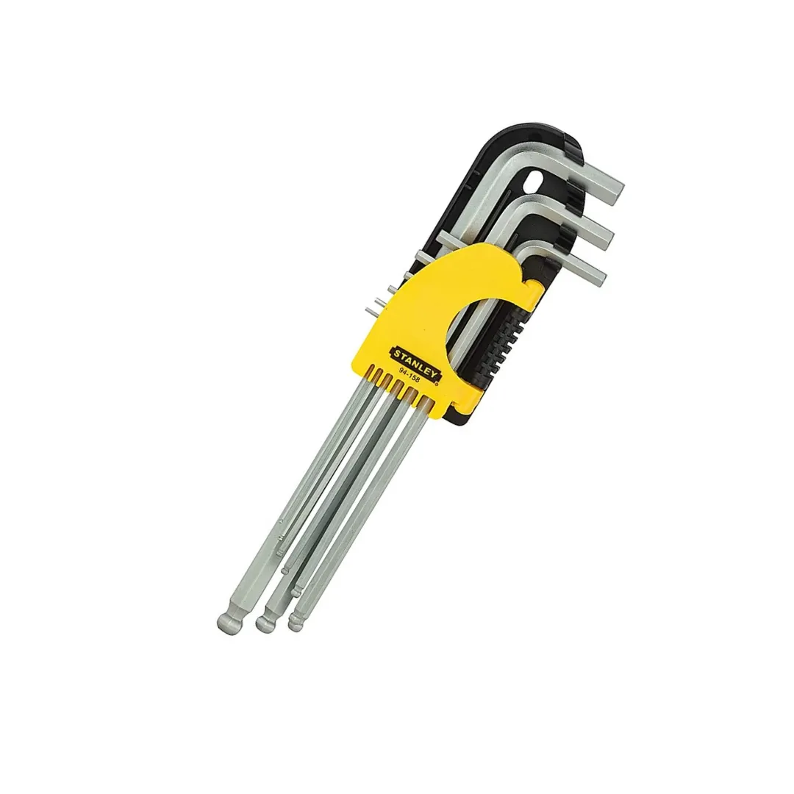
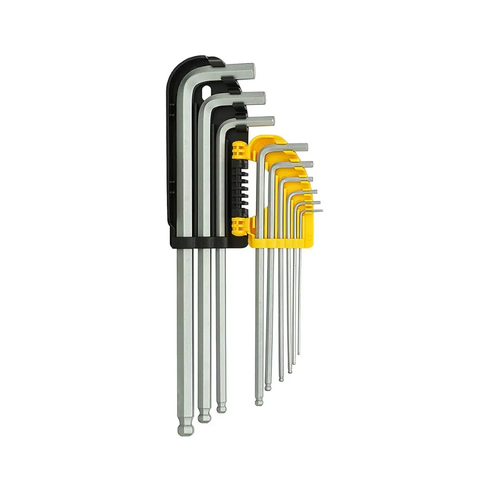
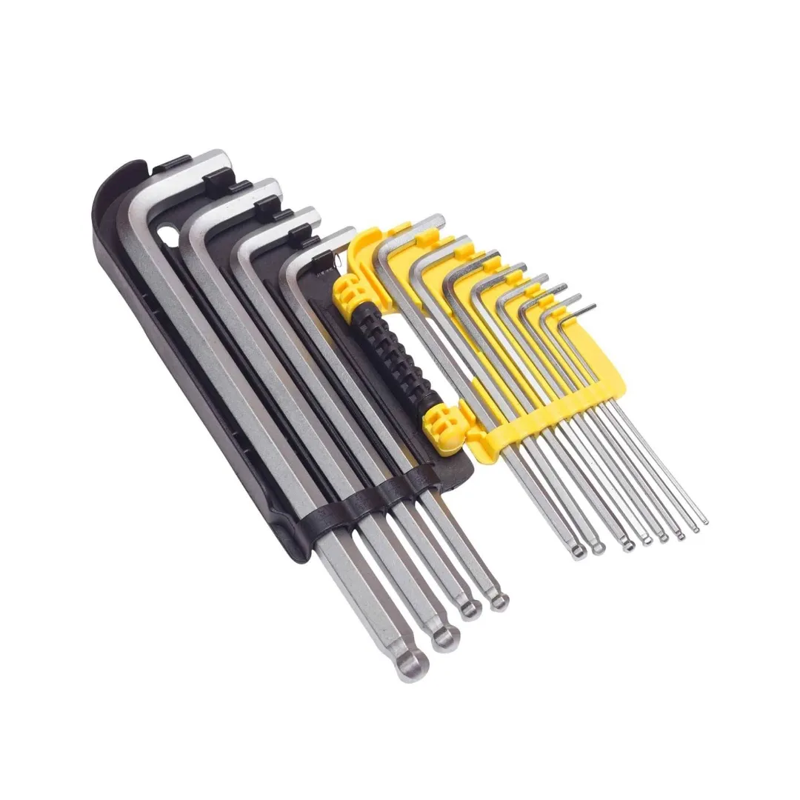

STMT94162-8



Designed for both professional and DIY use, this 9-piece metric ball end hex key set is the ultimate tool for fastening and loosening hex screws. Crafted for exceptional durability and performance, it offers a long lifespan and reliable functionality, making it a must-have addition to your toolkit.
Key Features:
Set Includes:
Nine metric hex keys with long, spherical heads for enhanced functionality and versatility.
Upgrade your toolkit with this Long Spheric-Head Hex Key Set for a reliable and efficient solution to all your hex screw needs.
| Rating | Industrial |
| Number of Allen Keys | 9 |
| Material | High-Quality S2 steel |
| Sizes | 1.5mm, 2mm, 2.5mm, 3mm, 4mm, 5mm, 6mm, 8mm, 10mm, |